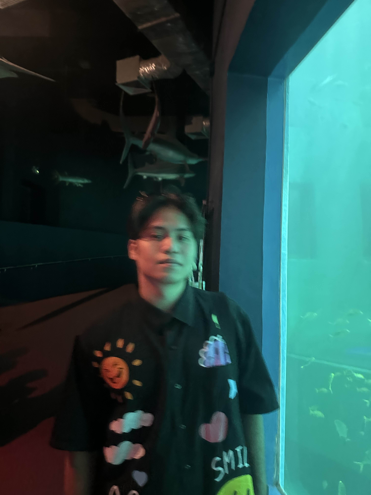
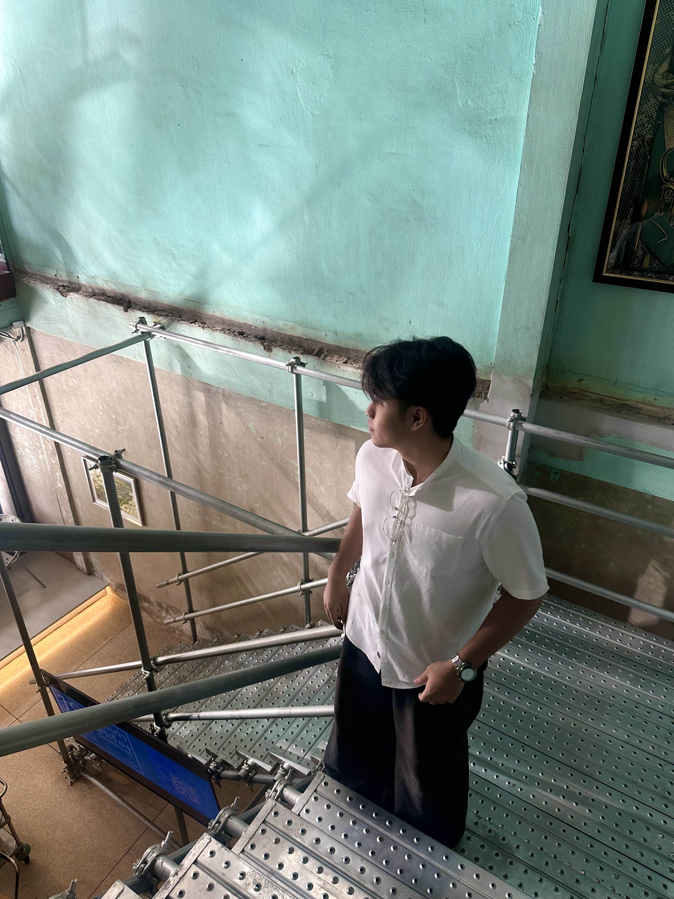
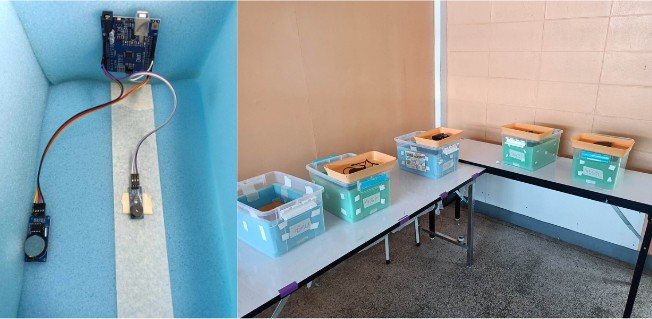
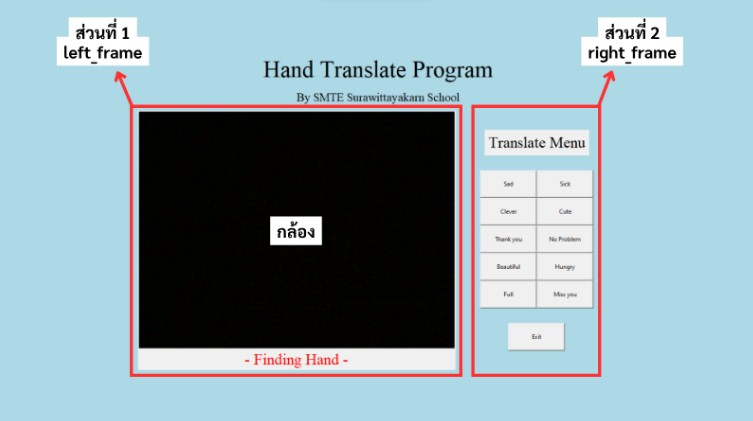
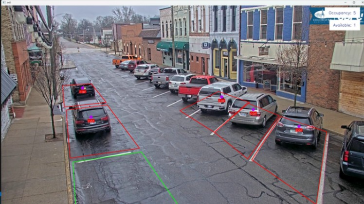
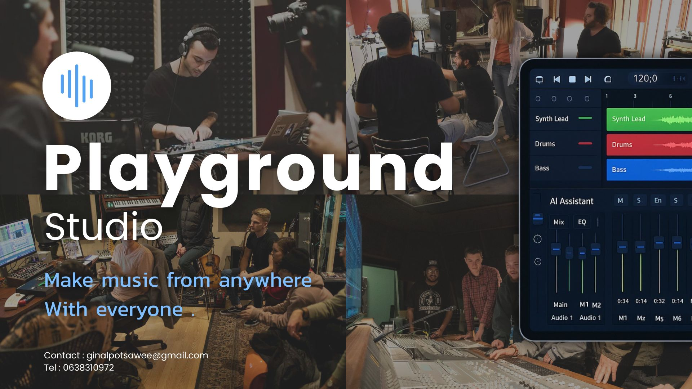
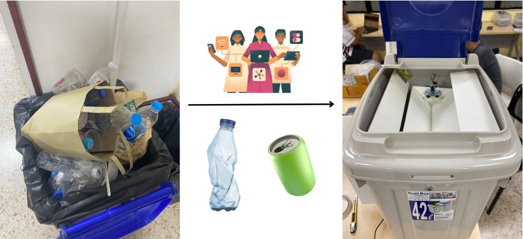

Skills Reflects Our Knowledge
เกนชาน่า เต่งเหนง เนงเหน่งงงงง
3
Years of
Experience
Experience

Hi, I’m Raschakorn Sudchawong—an AIoT Engineer based in Bangkok. I’m studying for a Bachelor of Engineering in IoT System and Information Engineering and focus on designing smart, connected systems that bridge hardware, data, and AI. I enjoy working across sensors, microcontrollers, and cloud platforms to deliver reliable, real-time insights. Outside the lab, I’m constantly exploring new tools and best practices to ship clean, maintainable solutions that scale.

เกนชาน่า เต่งเหนง เนงเหน่งงงงง

ศึกษาการงอกเชิงกายภาพ และเชิงเคมีของเมล็ดข้าวขาวดอกมะลิ 105 และ ข้าวมะลินิลสุรินทร์ ที่ได้รับการยืนยันจากศูนย์วิจัยข้าวจังหวัดสุรินทร์ เมื่อได้รับความถี่คลื่นเสียง 400 Hz, 800 Hz, 1200 Hz และ 1600 Hz จาก passive buzzer ด้วยบอร์ด Arduino Uno r3 และเมล็ดที่ไม่ได้รับคลื่นเสียงเป็นชุดควบคุม

แอปพลิเคชันแปลภาษามือมีการแสดงภาพเพื่อรับภาพจากผู้ใช้งาน มีแถบข้อความเพื่อแสดงคำที่แปล ปุ่มกดเพื่อใช้แสดงตัวอย่างภาพภาษามือ และปุ่ม "Exit" เพื่อกดออกจากแอปพลิเคชัน แอปพลิเคชันสามารถแปลภาษา แอปพลิเคชันมีความถูกต้อง ร้อยละ 83.28 จึงสามารถสื่อสารในบทสนทนาพื้นฐานได้อย่างมีประสิทธิภาพ

ระบบตรวจจับที่จอดรถอัจฉริยะช่วยให้ผู้ใช้สามารถทราบสถานะที่จอดรถได้แบบเรียลไทม์ผ่านการตรวจจับรถด้วย AI และ YOLO ทำให้ลดเวลาในการหาที่จอดรถ และบริหารจัดการที่จอดได้อย่างมีประสิทธิภาพ นอกจากนี้ยังช่วยลดมลพิษจากการขับรถวนหาที่จอดและสามารถพัฒนาต่อเป็นระบบ Smart Parking ในอนาคต.
"PAYSAFE" คือแพลตฟอร์มตัวกลางที่จะมาแก้ปัญหา สำหรับการซื้อขาย Social Commerce อย่าง Facebook, IG ที่ทำหน้าที่ ปกป้องทั้งผู้ซื้อและผู้ขาย ด้วยระบบโอนกลาง (Escrow) ที่ปล่อยเงินก็ต่อเมื่อได้รับสินค้าจริง และระบบติดตามสถานะการสั่งซื้อที่โปร่งใส

Real-time Collaboration DAW with studio quality recording and AI power asisstance

ถังขยะที่สามารถแยกขยะประเภทโลหะและอโลหะได้โดยอัตโนมัติ ซึ่งมุ่งเน้นการแยกขยะประเภทกระป๋องและขวดพลาสติก รวมทั้งสร้างรายได้แก่ขยะที่สามารถกลับไปรีไซเคิลได้ อีกทั้งยังช่วยลดการเกิดแหล่งเชื้อโรคได้อีกด้วย
Me llamo Raschakorn Sudchawong y soy de la provincia de Surin, Tailandia.Estudio IoT e Información en el Instituto de Tecnología Rey Mongkut de Ladkrabang.